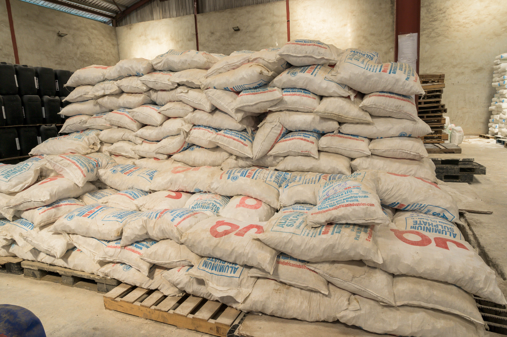
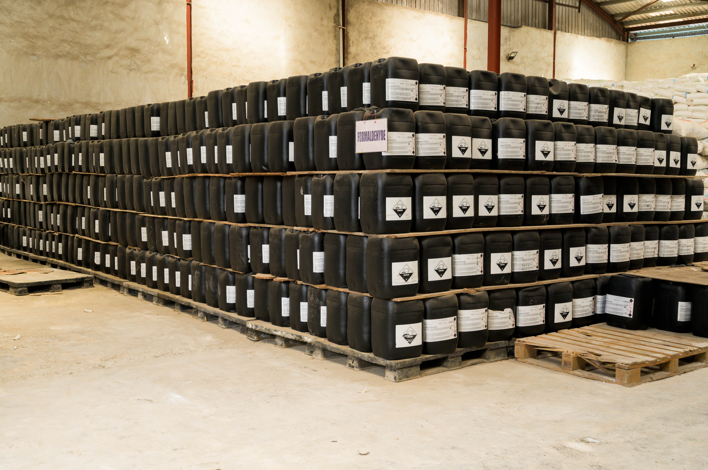

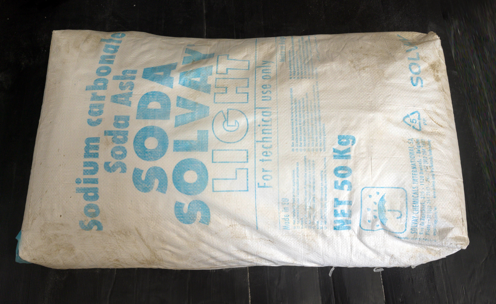
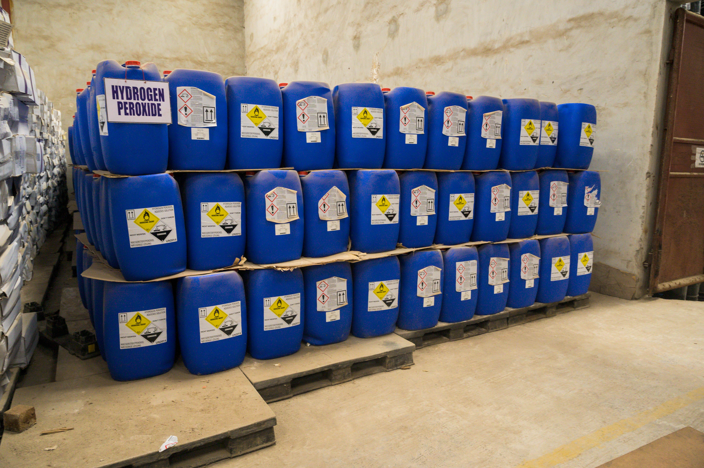
We supply high-purity industrial chemicals compliant with international quality and safety standards tailored to meet the needs of manufacturing, water treatment, agriculture, food processing, mining, and general industrial applications. Our products are sourced from certified manufacturers and distributed in secure, regulation-compliant packaging suitable for industrial handling, storage, and transport.



A versatile organic acid widely used in chemical synthesis, food processing, textiles, and pharmaceuticals. It serves as a key raw material in the production of acetate esters, vinegar, solvents, and polymers.
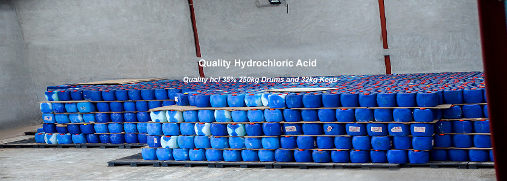
A strong inorganic acid used in metal pickling, pH control, water treatment, oil well acidizing, and chemical processing, supplied in secure kegs and drums to ensure safe handling and transport.
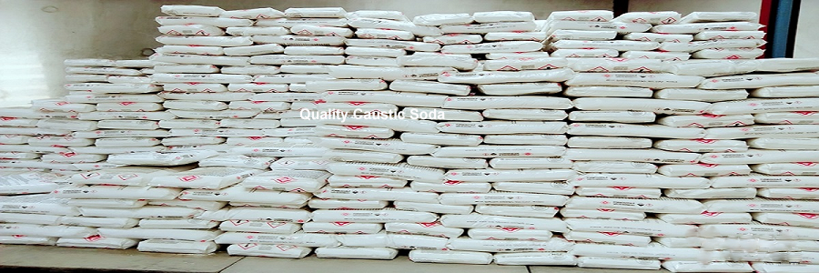
An essential industrial alkali used in the manufacture of soaps and detergents, paper production, textiles, petroleum refining, and water treatment. Available in solid and liquid forms.
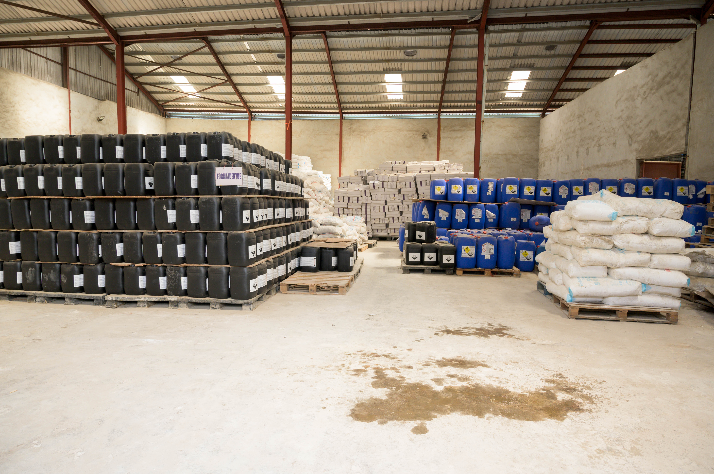
Widely used in fertilizer production, refrigeration systems, water treatment, and chemical synthesis. It plays a critical role in agricultural and industrial applications.
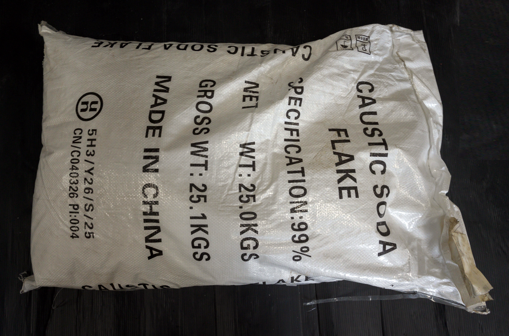
Commonly used as a coagulant in water and wastewater treatment. Also applied in paper manufacturing and textile processing.
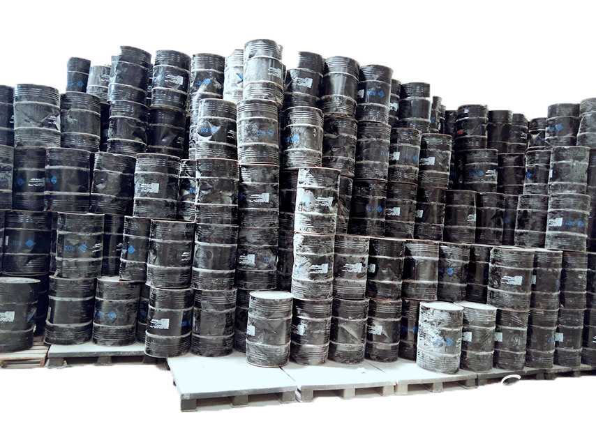
Primarily used for the production of acetylene gas for welding and cutting operations. Also utilized in chemical synthesis and certain agricultural applications.
Sodium carbonate is used in glass manufacturing, detergents, water softening, and chemical production. Light soda ash is ideal for chemical processing, while dense soda ash is suited for glass production.
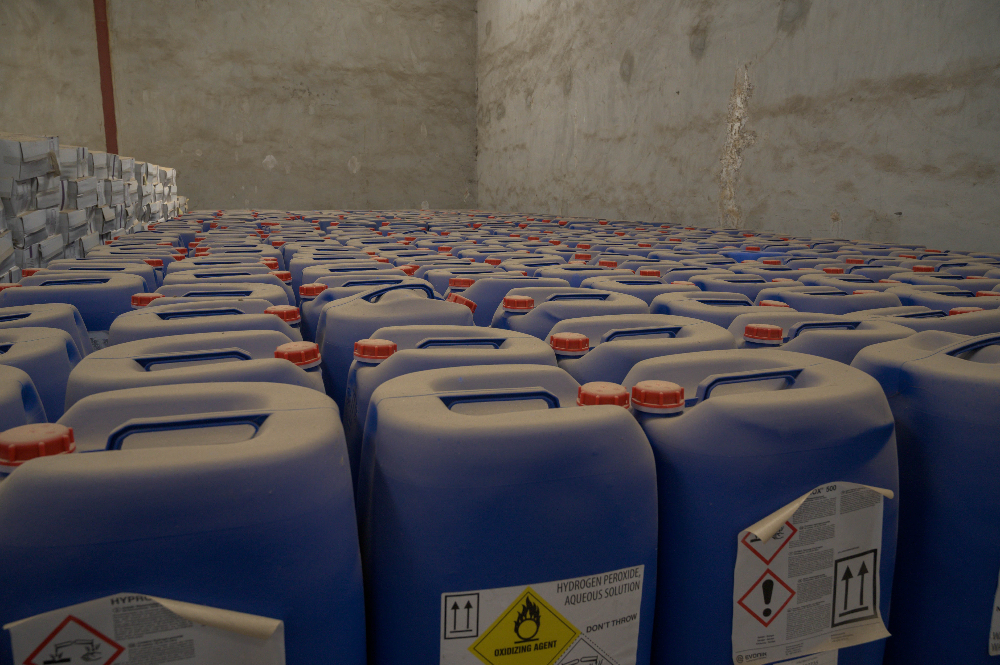
Used in candle making, packaging, cosmetics, rubber processing, and waterproofing applications. Available in various melting points and grades.
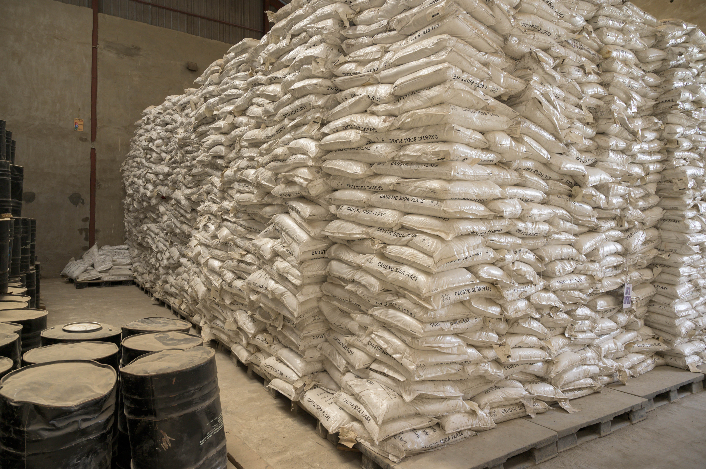
An important industrial chemical used in the production of resins, adhesives, disinfectants, and construction materials.
Used in fertilizer production, food processing, metal treatment, and water treatment. Available in different concentrations to meet industrial needs.
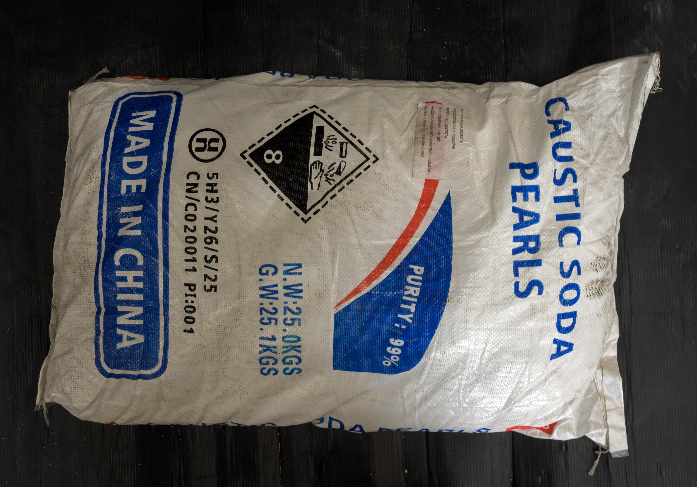
Widely used in water and wastewater treatment, construction, soil stabilization, and flue gas treatment.
A strong oxidizing agent used in bleaching, disinfection, water treatment, and chemical synthesis. Available in various industrial concentrations.
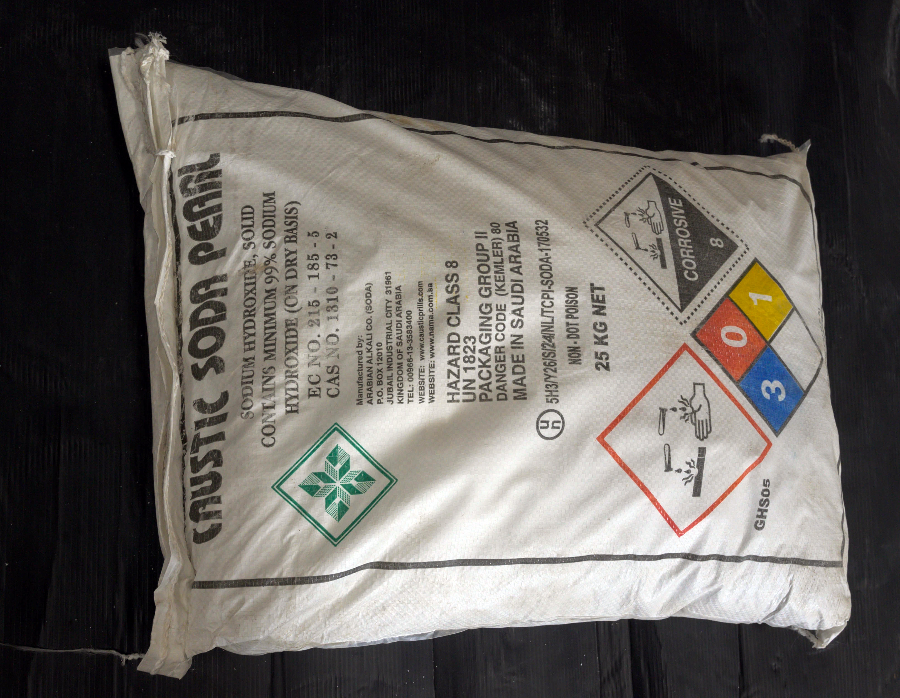
A powerful disinfectant and bleaching agent used in water purification, sanitation, and swimming pool treatment.